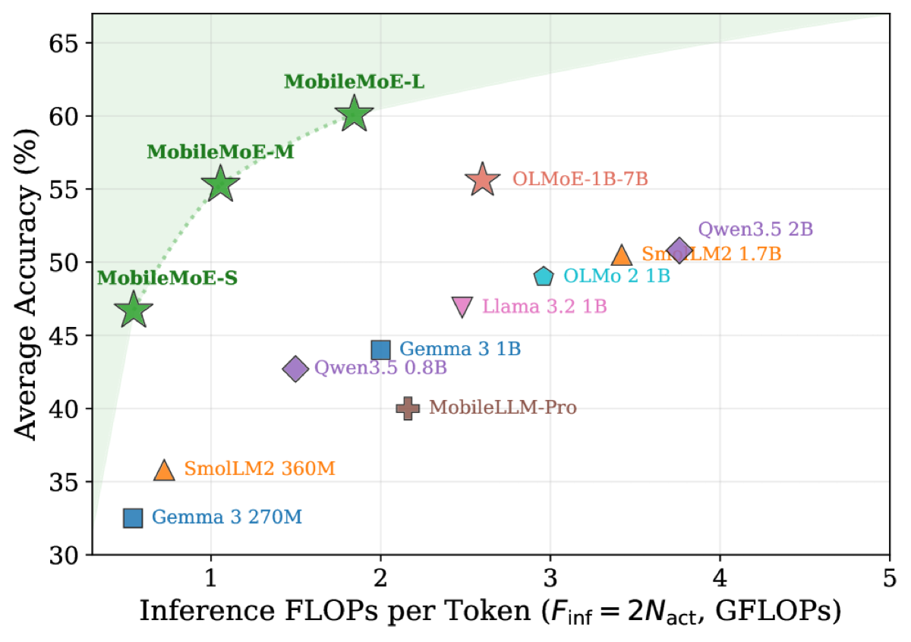
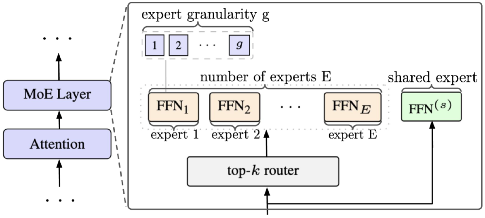
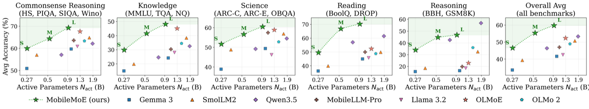

Overview — the logical flow개요 — 전체 논리 흐름
Figures from the paper논문 원본 그림



Comprehensive walkthrough전체 내용 정리
Motivation: MoE for the edge동기: 엣지를 위한 MoE
MoE dominates frontier server LLMs (DeepSeek-V3, Qwen3-MoE, Gemini, Grok) but on-device LLMs (MobileLLM, Gemma, SmolLM) remain dense. MoE offers three edge-relevant efficiencies: parameter efficiency (expand total capacity, activate only a sparse fraction), runtime efficiency (sparse activation cuts inference FLOPs and saves battery), and learning efficiency (experts specialize across knowledge/code/math). Growing smartphone DRAM (e.g. iPhone 13 4GB to iPhone 17 12GB; S25 up to 16GB) now provides headroom to host sparse LLMs locally, but no established methodology for scaling sub-billion-active MoE under joint memory and compute limits exists.
MoE는 최전선 서버 LLM(DeepSeek-V3, Qwen3-MoE, Gemini, Grok)을 지배하지만 온디바이스 LLM(MobileLLM, Gemma, SmolLM)은 여전히 dense이다. MoE는 엣지에 유용한 세 가지 효율성을 제공한다: 파라미터 효율(전체 용량을 키우되 희소한 일부만 활성화), 런타임 효율(희소 활성화가 추론 FLOPs를 줄이고 배터리를 절약), 학습 효율(전문가가 지식/코드/수학에 특화). 늘어나는 스마트폰 DRAM(iPhone 13 4GB → iPhone 17 12GB, S25 최대 16GB)이 이제 희소 LLM을 로컬에 둘 여유를 주지만, 메모리·연산 동시 제약 하에서 10억 미만 활성 MoE를 스케일링하는 정립된 방법론은 없다.
The on-device MoE scaling law온디바이스 MoE 스케일링 법칙
The core formulation is L(N_act, D, E_hat, x) = A_x · E_hat^δ_x · N_act^(α_x + γ_x·ln E_hat) + B_x · E_hat^ω_x · D^(β_x + ζ_x·ln E_hat) + c_x, where N_act is active parameters, D is training tokens, E_hat is a monotonic transform of expert count E (controlling total parameters and sparsity = 1 − N_act/N_total), and x denotes granularity g and shared expert s. It cleanly reduces to the joint MoE scaling law (fix x) and the Chinchilla law (fix E). The optimization minimizes L subject to training FLOPs F_train=6·N_act·D, per-token inference FLOPs F_inf=2·N_act, and memory M = (b_w/8)·N_total + (b_kv/8)·2·T·n_l·n_kv·d_h ≤ ~5GB, using 4-bit weights and 8-bit KV cache.
핵심 정식화는 L(N_act, D, E_hat, x) = A_x · E_hat^δ_x · N_act^(α_x + γ_x·ln E_hat) + B_x · E_hat^ω_x · D^(β_x + ζ_x·ln E_hat) + c_x 이며, 여기서 N_act는 활성 파라미터, D는 학습 토큰, E_hat은 전문가 수 E의 단조 변환(전체 파라미터와 희소성=1−N_act/N_total을 결정), x는 granularity g와 공유 전문가 s를 가리킨다. 이 식은 x를 고정하면 joint MoE 스케일링 법칙으로, E를 고정하면 Chinchilla 법칙으로 깔끔히 환원된다. 최적화는 학습 FLOPs F_train=6·N_act·D, 토큰당 추론 FLOPs F_inf=2·N_act, 그리고 4비트 가중치·8비트 KV 캐시를 쓴 메모리 M = (b_w/8)·N_total + (b_kv/8)·2·T·n_l·n_kv·d_h ≤ 약 5GB 제약 하에서 L을 최소화한다.
Divide-and-conquer architecture search분할정복 아키텍처 탐색
A full joint sweep over (E, g, s) is combinatorial, but at fixed N_act the axes decouple: E alone changes N_total/memory; g splits experts while preserving both N_act and N_total; s adds a dense pathway sized to preserve parameters. So the memory/compute-optimal E survives any later g or s choice. Each ablation runs on 8 nodes (64 H100 96GB) with batch 3,072, seq 2,048, up to ~500B tokens, sweeping N_act in {0.3,0.5,0.9}B and D in {100..500}B, fitting the law with curve_fit warm-start then L-BFGS-B (E-sweep RMSE 0.0076).
(E, g, s)에 대한 완전 결합 스윕은 조합적으로 폭발하지만, 고정된 N_act에서 축이 분리된다: E는 N_total/메모리만 바꾸고, g는 N_act와 N_total을 모두 보존하며 전문가를 쪼개고, s는 파라미터를 보존하도록 크기를 맞춘 dense 경로를 추가한다. 따라서 메모리·연산 최적 E는 이후 g나 s 선택에도 유지된다. 각 ablation은 8노드(64×H100 96GB), 배치 3,072, 시퀀스 2,048, 최대 약 500B 토큰으로 수행되며, N_act∈{0.3,0.5,0.9}B·D∈{100..500}B를 스윕하고 curve_fit 웜스타트 후 L-BFGS-B로 법칙을 피팅한다(E-스윕 RMSE 0.0076).
Three findings → the sweet spot세 가지 발견 → 스위트 스폿
Finding 1: at fixed memory (M>0.25GB), MoE (E>1) beats dense; increasing E reduces loss with diminishing returns beyond E=8, so moderate sparsity E∈{4,8} is the on-device sweet spot (at 5GB, optimal E=8; E=32 even regresses). Finding 2: fine-grained experts (g>1) give substantially lower loss at fixed compute via more diverse top-k routing, with diminishing returns beyond g=8 (g=16 adds ~50% wall-clock for <0.01 loss gain). Finding 3: adding a shared expert lowers loss at fixed FLOPs. The result is MoE(E=8, g=8, s=yes): 60 routed fine-grained experts + top-4 routing + 1 always-on shared expert (chosen divisible by EP=4 and preserving N_act/N_total for fair comparison).
발견 1: 고정 메모리(M>0.25GB)에서 MoE(E>1)가 dense를 능가하며, E를 키우면 손실이 줄되 E=8 이후 수확 체감 — 따라서 적당한 희소성 E∈{4,8}이 온디바이스 스위트 스폿(5GB에서 최적 E=8, E=32는 오히려 퇴보). 발견 2: 세분화 전문가(g>1)는 더 다양한 top-k 라우팅으로 고정 연산에서 손실을 크게 낮추되 g=8 이후 수확 체감(g=16은 손실 0.01 미만 개선에 wall-clock 약 50% 추가). 발견 3: 공유 전문가 추가가 고정 FLOPs에서 손실을 낮춘다. 결과는 MoE(E=8, g=8, s=예): 60개 라우팅 세분화 전문가 + top-4 라우팅 + 항상 켜진 공유 전문가 1개(EP=4로 나누어떨어지고 공정 비교를 위해 N_act/N_total 보존).
Architecture instantiation (S/M/L)아키텍처 구현 (S/M/L)
The backbone follows the deep-thin on-device convention: expansion ratio d_ff/d_model=4, aspect ratio d_model/n_l≈40, SwiGLU, GQA with 4 KV heads. The three scales are S (d_model 768, n_l 20), M (1024, 26), L (1280, 32), giving 0.3/0.5/0.9B active and 1.26/2.82/5.33B total parameters — all under 3-5GB INT4 budgets. The MoE layer output is y = Σ_{i∈Top-gk} router_i(x)·FFN_i(x) + FFN^(s)(x).
백본은 deep-thin 온디바이스 관례를 따른다: 확장비 d_ff/d_model=4, 종횡비 d_model/n_l≈40, SwiGLU, KV 헤드 4개의 GQA. 세 규모는 S(d_model 768, n_l 20), M(1024, 26), L(1280, 32)로 활성 0.3/0.5/0.9B·전체 1.26/2.82/5.33B 파라미터를 가지며 모두 3-5GB INT4 예산 이내다. MoE 레이어 출력은 y = Σ_{i∈Top-gk} router_i(x)·FFN_i(x) + FFN^(s)(x) 이다.
Four-stage training recipe4단계 학습 레시피
(1) Pre-training: ~6T open-licensed tokens at 2k context, web-heavy mix (62% web, 11.6% math, 10% code, 10% knowledge, 6.4% science), tied embeddings, RoPE θ=500k, Llama-3 128K tokenizer. Stability via auxiliary-loss-free balancing (λ_lb=1e-3), router z-loss (λ_z=1e-4), sigmoid gating with per-token top-k normalization, FP32 router. (2) Mid-training: ~500B tokens at 8k context, shifting toward curated math/code/knowledge/science → MobileMoE-Base. (3) Instruction SFT: dropless dispatch, ~126B tokens at 8k → MobileMoE-SFT. (4) INT4 QAT: symmetric group-wise INT4 weights (group 32) + INT8 activations + FP32 router, ~21B tokens → MobileMoE-QAT. Pre-training runs 3-4 weeks on 16-32 H100 nodes.
(1) 사전학습: 2k 컨텍스트에서 약 6T 오픈 라이선스 토큰, 웹 중심 혼합(웹 62%, 수학 11.6%, 코드 10%, 지식 10%, 과학 6.4%), tied 임베딩, RoPE θ=500k, Llama-3 128K 토크나이저. 안정화는 aux-loss-free 밸런싱(λ_lb=1e-3), router z-loss(λ_z=1e-4), 토큰별 top-k 정규화 sigmoid 게이팅, FP32 라우터로 수행. (2) Mid-training: 8k 컨텍스트에서 약 500B 토큰, 엄선된 수학/코드/지식/과학으로 이동 → MobileMoE-Base. (3) Instruction SFT: dropless 디스패치, 8k에서 약 126B 토큰 → MobileMoE-SFT. (4) INT4 QAT: 대칭 group-wise INT4 가중치(그룹 32) + INT8 활성화 + FP32 라우터, 약 21B 토큰 → MobileMoE-QAT. 사전학습은 16-32 H100 노드에서 3-4주 소요.
Benchmark results & stage analysis벤치마크 결과 및 단계 분석
Evaluated with lm-eval on 14 foundational + 8 advanced benchmarks. MobileMoE-L-Base scores 59.8% avg, beating OLMoE-1B-7B (52.4%) by +7.4 with 30% fewer active params; MobileMoE-M (55.4%) tops Qwen3.5 2B (53.3%) using 3.6x fewer active params. On advanced tasks MobileMoE-L-SFT reaches 41.2% math and 58.8% code avg, leading OLMoE-1B-7B by +23.0 (math) and +25.7 (code). Stage analysis: pre-training saturates commonsense; mid-training drives the biggest knowledge/reading gains (MMLU-S +10.2, DROP-M +11.3); SFT unlocks reasoning (GSM8K-L 55.7→77.6). MobileMoE-L's edge over OLMoE establishes at pre-training and compounds through SFT.
lm-eval로 14개 기초 + 8개 고급 벤치마크에서 평가. MobileMoE-L-Base는 평균 59.8%로 활성 파라미터 30% 적게 쓰며 OLMoE-1B-7B(52.4%)를 +7.4 앞서고, MobileMoE-M(55.4%)은 활성 3.6배 적게 쓰며 Qwen3.5 2B(53.3%)를 능가. 고급 과제에서 MobileMoE-L-SFT는 수학 평균 41.2%·코드 58.8%로 OLMoE-1B-7B를 수학 +23.0·코드 +25.7 앞선다. 단계 분석: 사전학습은 상식을 포화시키고, mid-training이 지식/독해 향상을 주도(MMLU-S +10.2, DROP-M +11.3), SFT가 추론을 끌어올린다(GSM8K-L 55.7→77.6). MobileMoE-L의 OLMoE 대비 우위는 사전학습에서 형성되어 SFT까지 누적된다.
On-device deployment & profiling온디바이스 배포 및 프로파일링
Since mobile backends (XNNPACK) lack a fused MoE op, the authors build a custom ExecuTorch MoE operator: a counting sort reorders tokens by expert ID into dense grouped GEMMs (torchao INT4), and the whole FFN (top-k select, dispatch, fused gate/up GEMM, SwiGLU, down-proj, scatter-unpermute) fuses into one op. INT4 QAT preserves accuracy (only 2.3-2.8 pt drop vs BF16) at footprints 0.68/1.48/2.75 GB (S/M/L). On Samsung S25 and iPhone 16 Pro, MobileMoE-S is 1.8-3.8x faster prefill / 2.2-3.4x faster decode than dense MobileLLM-Pro at similar accuracy and memory. Crucially, real prompts (not dummy tokens) are needed to profile MoE memory because expert routing is input-dependent (real-prompt peak RSS is 1.2-2.1x dummy). MobileMoE-S even uses up to 22% less peak RAM at 8k (1.49 vs 1.91 GB); MobileMoE-L stays under 5GB (4.71 GB at 8k). Limitations/future work: distillation, reasoning-oriented post-training, multimodal extensions, dynamic routing, expert pruning, mixed-precision, and NPU deployment.
모바일 백엔드(XNNPACK)에 fused MoE 연산자가 없어, 저자들은 커스텀 ExecuTorch MoE 연산자를 구축한다: counting sort로 토큰을 전문가 ID별로 재배열해 dense grouped GEMM(torchao INT4)으로 만들고, FFN 전체(top-k 선택, 디스패치, gate/up 융합 GEMM, SwiGLU, down-proj, scatter-unpermute)를 하나의 op로 융합한다. INT4 QAT는 0.68/1.48/2.75GB(S/M/L) 용량에서 정확도를 보존한다(BF16 대비 2.3-2.8점 하락에 그침). Samsung S25와 iPhone 16 Pro에서 MobileMoE-S는 유사한 정확도·메모리로 dense MobileLLM-Pro 대비 prefill 1.8-3.8배·decode 2.2-3.4배 빠르다. 중요하게도, 전문가 라우팅이 입력 의존적이라 MoE 메모리 프로파일링에는 dummy 토큰이 아닌 실제 프롬프트가 필요하다(실제 프롬프트 피크 RSS가 dummy의 1.2-2.1배). MobileMoE-S는 8k에서 피크 RAM을 최대 22% 더 적게 쓰며(1.49 vs 1.91GB), MobileMoE-L도 5GB 미만 유지(8k에서 4.71GB)한다. 한계/향후 과제: 증류, 추론 지향 post-training, 멀티모달 확장, 동적 라우팅, 전문가 가지치기, 혼합 정밀도, NPU 배포.
Key results — Base accuracy & on-device runtime핵심 결과 — Base 정확도 및 온디바이스 런타임
| Model | Active / Total params | Foundational Avg (%) | INT4 weight mem (GB) | S25 decode @512 (tok/s) |
|---|---|---|---|---|
| MobileMoE-S | 272M / 1.3B | 46.5 | 0.68 | 130.0 |
| MobileMoE-M | 528M / 2.8B | 55.4 | 1.48 | 77.1 |
| MobileMoE-L | 922M / 5.3B | 59.8 | 2.75 | 43.0 |
| OLMoE-1B-7B | 1.3B / 6.9B | 52.4 | (~3.45 proj.) | — |
| MobileLLM-Pro (dense) | 1.1B | 47.0 | 0.55 | 56.5 |
| Qwen3.5 2B (dense) | 1.9B | 53.3 | — | — |
Foundational Avg is BF16 Base-model accuracy (Table 2); INT4 weight memory and S25 decode rate are from the QAT deployment (Tables 6-7) and apply to MobileMoE-S/M/L and MobileLLM-Pro only (dashes = not reported for that model). OLMoE INT4 memory is a projected ~N_total/2 estimate, not a deployed number. Decode @512 = generation throughput at 512-token input on Samsung Galaxy S25 (Snapdragon 8 Elite, 4 CPU threads).
Foundational Avg는 BF16 Base 모델 정확도(Table 2)이며, INT4 가중치 메모리와 S25 decode 속도는 QAT 배포(Table 6-7)에서 가져온 값으로 MobileMoE-S/M/L과 MobileLLM-Pro에만 해당한다(대시 = 해당 모델 미보고). OLMoE INT4 메모리는 배포 수치가 아닌 약 N_total/2 추정치다. Decode @512 = Samsung Galaxy S25(Snapdragon 8 Elite, CPU 4스레드)에서 512토큰 입력 시 생성 처리량.
✅ Strengths✅ 강점
Genuinely joint memory-and-compute scaling formulation메모리와 연산을 함께 고려한 스케일링 정식화
The paper's core conceptual move — making total parameters (memory) and active parameters (inference compute) separate constrained quantities in the optimization (Eq. 4-5) rather than collapsing them into a single compute budget — is a legitimate and well-motivated reframing for the on-device regime. The memory proxy explicitly accounts for INT4 weights plus INT8 KV cache at context length T, which is the right decomposition for edge deployment and is more honest than server-side scaling laws that ignore footprint.
이 논문의 핵심 개념적 기여는 총 파라미터(메모리)와 활성 파라미터(추론 연산)를 하나의 연산 예산으로 합치지 않고 최적화(식 4-5)에서 별도의 제약 변수로 분리한 점이다. 이는 온디바이스 환경에 대해 정당하고 동기가 분명한 재정식화이며, INT4 가중치와 문맥 길이 T에서의 INT8 KV 캐시를 명시적으로 반영한 메모리 프록시는 풋프린트를 무시하는 서버측 스케일링 법칙보다 솔직한 분해다.
Controlled, parameter-preserving ablation design파라미터를 보존하는 통제된 절제 실험 설계
The divide-and-conquer ablation (Section 3.3, Table A.1) is thoughtfully constructed: granularity g is varied while holding both N_act and N_total fixed, and the shared expert is added by replacing 4 routed experts with one 4x-sized shared expert so that active and total params (and thus memory) are preserved. This isolates the architectural effect from confounds of parameter count, which is exactly the right experimental hygiene for an architecture study and is better controlled than many MoE papers.
분할 정복식 절제 실험(3.3절, 표 A.1)은 신중하게 구성되어 있다. 입도 g를 변화시킬 때 N_act와 N_total을 모두 고정하고, 공유 전문가는 라우팅 전문가 4개를 4배 크기의 공유 전문가 하나로 대체하는 방식으로 추가하여 활성·총 파라미터(따라서 메모리)를 보존한다. 이는 파라미터 수의 교란 요인으로부터 구조적 효과를 분리하며, 다수의 MoE 논문보다 잘 통제된 실험 위생이다.
End-to-end deployment with a real custom kernel and honest dummy-vs-real profiling실제 커스텀 커널을 통한 종단간 배포와 솔직한 더미 대 실제 프롬프트 프로파일링
The work does not stop at FLOP counting: it implements a fused MoE operator in ExecuTorch (counting-sort token reorder, grouped INT4 GEMM, fused SwiGLU) and profiles on two real flagship phones across CPU/GPU. The insistence on using real prompts rather than dummy repeated tokens for Peak RSS (Table 9), and the observation that real prompts inflate MoE memory 1.2-2.1x by activating diverse experts, is a methodologically careful point that many MoE deployment papers miss and that the authors could easily have hidden.
이 연구는 FLOP 계산에 그치지 않고 ExecuTorch에 융합 MoE 연산자(계수 정렬 토큰 재배치, 그룹 INT4 GEMM, 융합 SwiGLU)를 구현하고 두 실제 플래그십 폰에서 CPU/GPU로 프로파일링한다. Peak RSS 측정 시 더미 반복 토큰이 아닌 실제 프롬프트를 고집한 점(표 9), 그리고 실제 프롬프트가 다양한 전문가를 활성화하여 MoE 메모리를 1.2-2.1배 부풀린다는 관찰은 다수의 MoE 배포 논문이 놓치는, 그리고 저자들이 쉽게 숨길 수도 있었던 방법론적으로 신중한 지점이다.
Strong, scale-matched code and math gains that are hard to explain away규모를 맞춘 코드·수학에서의 강한, 설명하기 어려운 이득
On the advanced benchmarks (Table 4) the margins on code and math are large and consistent across all three scales (e.g., MobileMoE-L code Avg 58.8 vs OLMoE-1B-7B 33.1; math 41.2 vs 18.2), and the authors transparently report where they lose (instruction following and knowledge-reasoning, trailing Qwen3.5-2B). Reporting losses alongside wins, and attributing the Qwen gap to a stronger post-training recipe rather than denying it, strengthens credibility.
고급 벤치마크(표 4)에서 코드와 수학의 격차는 세 규모 전반에 걸쳐 크고 일관적이며(예: MobileMoE-L 코드 평균 58.8 대 OLMoE-1B-7B 33.1; 수학 41.2 대 18.2), 저자들은 패배 영역(명령 수행, 지식·추론에서 Qwen3.5-2B에 뒤짐)을 투명하게 보고한다. 승리와 함께 패배를 보고하고 Qwen 격차를 부정하지 않고 더 강한 사후 학습 레시피 탓으로 돌리는 점이 신뢰도를 높인다.
Broad benchmark suite with re-run, decoding-controlled baselines광범위한 벤치마크 모음과 동일 조건으로 재평가한 베이스라인
The evaluation spans 14 foundational plus 8 advanced benchmarks across five competencies, and the authors re-evaluate all baselines in-house under identical greedy-decoding settings (lm-eval) rather than copying reported numbers (Sec. 4.1, Tables 2-4). This removes a common source of cross-paper unfairness and the per-benchmark numbers are fully tabulated rather than collapsed into averages, so a skeptical reader can audit where gains come from (e.g., knowledge/reading vs. reasoning).
평가는 다섯 가지 역량에 걸친 14개 기초 + 8개 고급 벤치마크를 포괄하며, 저자들은 보고된 수치를 그대로 옮기지 않고 모든 베이스라인을 동일한 그리디 디코딩 설정(lm-eval)으로 직접 재평가한다(4.1절, 표 2-4). 이는 논문 간 비교에서 흔한 불공정성 원인을 제거하고, 벤치마크별 수치를 평균으로 뭉개지 않고 전부 표로 제시하여 회의적 독자가 이득의 출처(예: 지식/독해 대 추론)를 직접 검증할 수 있게 한다.
Architecture-design ablations are genuinely controlled구조 설계 제거 실험이 실제로 통제되어 있음
The three design-axis ablations (E, g, s) are constructed to isolate one factor at a time at fixed active/total parameters: g splits experts without changing N_act or N_total, and the shared-expert variant is sized to preserve both parameters and the EP=4 divisibility (Sec. 3.3, Table A.1). This is a non-trivial experimental design that avoids the common confound where 'shared expert helps' is really just 'more parameters help,' and each ablation point is reported with an RMSE of the scaling-law fit (Table A.2).
세 가지 설계 축 제거 실험(E, g, s)은 활성/전체 파라미터를 고정한 채 한 번에 한 요인만 분리하도록 구성된다: g는 N_act나 N_total을 바꾸지 않고 전문가를 분할하고, 공유 전문가 변형은 두 파라미터와 EP=4 가분성을 모두 보존하도록 크기가 조정된다(3.3절, 표 A.1). 이는 '공유 전문가가 도움이 된다'가 실제로는 '파라미터가 많아서 도움이 된다'로 환원되는 흔한 교란을 피하는 비자명한 실험 설계이며, 각 제거 실험 지점은 스케일링 법칙 적합의 RMSE와 함께 보고된다(표 A.2).
Real on-device deployment with end-to-end profiling실기기 배포 및 종단간 프로파일링
Unlike most MoE papers that stop at FLOPs, the authors actually deploy INT4-QAT models on two flagship phones (Galaxy S25, iPhone 16 Pro) via a custom fused ExecuTorch kernel and report a full latency sweep over six context lengths, peak RSS, and a CPU/GPU/backend cross-cut (Tables 7-9). Profiling with real domain prompts rather than dummy tokens, and explicitly showing the real-vs-dummy RSS gap for MoE (Table 9), is a methodologically honest detail that strengthens the on-device claims.
FLOPs에서 멈추는 대부분의 MoE 논문과 달리, 저자들은 커스텀 융합 ExecuTorch 커널을 통해 INT4-QAT 모델을 실제 플래그십 폰 두 대(Galaxy S25, iPhone 16 Pro)에 배포하고 6개 컨텍스트 길이에 대한 전체 지연 시간 스윕, 피크 RSS, CPU/GPU/백엔드 교차 비교를 보고한다(표 7-9). 더미 토큰이 아닌 실제 도메인 프롬프트로 프로파일링하고 MoE의 실제-더미 RSS 격차를 명시적으로 보여주는 것(표 9)은 온디바이스 주장을 강화하는 방법론적으로 정직한 세부 사항이다.
⚔️ Weaknesses, gaps & suspicious points⚔️ 약점·부족한 점·의심 포인트
"Findings" are read off the fitted law, not measured — circular validation"발견"은 측정이 아니라 피팅된 법칙에서 읽어낸 것 — 순환적 검증
Figures 3 and 4 — the figures that visually justify Findings 1-3 (E=8, g=8, shared) — plot loss predicted by the fitted scaling law (Eq. 1), not raw measurements. The architectural choices are therefore extracted by interpolating the very curves the authors fit, and 'optimal E is obtained by interpolation within the swept range' (Appendix A.1). This is structurally circular: the law is fit to the sweep, then the sweep's conclusion is presented as a discovery of the law. The crossover points in Fig. 3 (where one E curve overtakes another, e.g. the E=8 sweet spot at exactly 5GB) are artifacts of the functional form and coefficient fit, not independent evidence. A scatter of measured validation losses overlaid on the predicted curves is conspicuously absent.
발견 1-3(E=8, g=8, 공유 전문가)을 시각적으로 정당화하는 그림 3과 4는 측정값이 아니라 피팅된 스케일링 법칙(식 1)이 예측한 손실을 도시한다. 따라서 구조 선택은 저자가 피팅한 바로 그 곡선을 보간하여 추출되며, '최적 E는 스윕 범위 내 보간으로 얻는다'(부록 A.1). 이는 구조적으로 순환적이다. 법칙을 스윕에 피팅한 뒤, 스윕의 결론을 법칙의 발견으로 제시한다. 그림 3의 교차점(예: 정확히 5GB에서의 E=8 스위트스폿)은 함수 형태와 계수 피팅의 산물이지 독립적 증거가 아니다. 예측 곡선 위에 측정된 검증 손실의 산점도를 겹쳐 보이는 것이 눈에 띄게 빠져 있다.
Speedup confounded by an asymmetric kernel: custom MoE op vs stock XNNPACK baseline비대칭 커널로 인한 속도 향상 교란: 커스텀 MoE 연산자 대 기본 XNNPACK 베이스라인
The headline 1.8-3.8x prefill / 2.2-3.4x decode speedups are attributed entirely to MoE's smaller active-parameter count, but the comparison is not kernel-matched: 'MobileLLM-Pro runs end-to-end on XNNPACK while MobileMoE routes its MoE FFN blocks through our custom op' (Section 4.3.2). The authors hand-optimized a fused operator (counting-sort dispatch, fused gate/up GEMM, fused SwiGLU, amortized quant overhead) for their own model while the dense baseline uses the off-the-shelf path. Part of the measured speedup could reflect kernel engineering effort rather than the architecture, and the paper provides no FLOP-normalized or roofline analysis separating the two. The claim that the kernel 'turns theoretical savings into measurable speedups' is exactly the confound left untested.
대표 수치인 프리필 1.8-3.8배 / 디코드 2.2-3.4배 향상은 전적으로 MoE의 적은 활성 파라미터 수 탓으로 돌려지지만, 비교는 커널이 맞춰져 있지 않다. 'MobileLLM-Pro는 XNNPACK으로 종단간 실행되는 반면 MobileMoE는 MoE FFN 블록을 우리의 커스텀 연산자로 라우팅한다'(4.3.2절). 저자들은 자기 모델을 위해 융합 연산자(계수 정렬 디스패치, 융합 gate/up GEMM, 융합 SwiGLU, 양자화 오버헤드 분산)를 수작업 최적화한 반면, 밀집 베이스라인은 기성 경로를 쓴다. 측정된 속도 향상의 일부는 구조가 아니라 커널 엔지니어링 노력을 반영할 수 있으며, 논문은 둘을 분리하는 FLOP 정규화나 루프라인 분석을 제공하지 않는다. 커널이 '이론적 절감을 측정 가능한 속도 향상으로 바꾼다'는 주장 자체가 검증되지 않은 교란 요인이다.
"Comparable accuracy" framing hides that the fast model is strictly less accurate"비슷한 정확도" 프레이밍이 빠른 모델이 명백히 덜 정확하다는 사실을 가림
The abstract and contributions repeatedly pair the speedup with 'comparable INT4 weight memory' and 'similar accuracy,' but MobileMoE-S scores 44.0 vs MobileLLM-Pro's 45.5 (Table 6) — it is 1.5 points worse, uses more weight memory (0.68 vs 0.55 GB), and collapses on knowledge retrieval (NQ 8.6 vs 13.9, TQA 25.0 vs 39.9). The single 'Pareto win at every context length' claim only holds if one accepts a worse, larger model as a valid trade. Meanwhile the headline omits that MobileMoE-M/L are slower at prefill (0.4-0.7x for L on S25) — this regression is disclosed only in body text, never in the abstract. The 'new Pareto frontier' is asserted as monotone progress while two of three variants lose on the speed axis the abstract foregrounds.
초록과 기여 항목은 속도 향상을 '비슷한 INT4 가중치 메모리'와 '유사한 정확도'와 반복적으로 짝짓지만, MobileMoE-S는 44.0으로 MobileLLM-Pro의 45.5보다 1.5점 낮고(표 6), 가중치 메모리도 더 크며(0.68 대 0.55 GB), 지식 검색에서 붕괴한다(NQ 8.6 대 13.9, TQA 25.0 대 39.9). '모든 문맥 길이에서 파레토 승리'라는 주장은 더 나쁘고 더 큰 모델을 유효한 교환으로 인정해야만 성립한다. 한편 대표 문구는 MobileMoE-M/L이 프리필에서 더 느리다는 점(S25에서 L은 0.4-0.7배)을 생략하며, 이 퇴행은 본문에만 공개되고 초록에는 결코 없다. '새로운 파레토 프런티어'는 단조 진보로 주장되지만 세 변종 중 둘은 초록이 전면에 내세운 속도 축에서 진다.
Single, outdated MoE baseline confounds architecture with a 2025 data/recipe advantage단일·구식 MoE 베이스라인이 구조와 2025년 데이터/레시피 우위를 교란
Every MoE comparison rests on exactly one baseline, OLMoE-1B-7B, a 2024 model trained on 5T tokens with a non-on-device recipe. MobileMoE is trained on ~6T tokens of 2025-era data (Dolma3, Nemotron, DCLM, FineWeb-Edu) plus a four-stage mid-training/SFT pipeline OLMoE never had. The paper attributes the +7-8 point win to architecture and scaling-law design, but the data mixture, token count, and post-training are all simultaneously different, so the architectural contribution cannot be isolated. No MoE baseline is re-trained under MobileMoE's own data and recipe (the obvious controlled comparison), and no recent MoE (e.g., a 2025 small MoE) is included. The 'state-of-the-art MoE' label for a one-year-old model is itself questionable.
모든 MoE 비교는 정확히 하나의 베이스라인 OLMoE-1B-7B(5T 토큰, 비온디바이스 레시피로 학습된 2024년 모델)에 의존한다. MobileMoE는 2025년대 데이터(Dolma3, Nemotron, DCLM, FineWeb-Edu) 약 6T 토큰과 OLMoE에는 없던 4단계 중간학습/SFT 파이프라인으로 학습된다. 논문은 +7-8점 우위를 구조와 스케일링 법칙 설계 탓으로 돌리지만, 데이터 혼합·토큰 수·사후학습이 동시에 모두 다르므로 구조적 기여를 분리할 수 없다. 어떤 MoE 베이스라인도 MobileMoE 자체의 데이터·레시피로 재학습되지 않았고(이것이 명백한 통제 비교), 최신 MoE(예: 2025년 소형 MoE)도 포함되지 않았다. 1년 된 모델에 '최첨단 MoE' 딱지를 붙이는 것 자체가 의심스럽다.
Architectural decisions ride on loss differences within fit noise (RMSE ~0.003)구조 결정이 피팅 잡음 수준의 손실 차이(RMSE 약 0.003)에 의존
The g- and s-sweep fits have RMSE of 0.0029-0.0037 on validation loss (Table A.2), yet the loss separations used to crown g=8 and s=checkmark are of the same tiny magnitude — the text itself admits g=16 gives '<0.01' loss reduction over g=8, i.e. within or near the fit error. Findings 2 and 3 thus rest on loss gaps that are not shown to exceed fitting/seed noise. No confidence intervals, no multiple seeds, and no statistical test are reported for any architectural verdict; each ablation cell appears to be a single training run. Declaring a 'compute-optimal sweet spot' from sub-0.01 loss differences without uncertainty quantification is an overreach.
g 및 s 스윕 피팅의 검증 손실 RMSE는 0.0029-0.0037(표 A.2)인데, g=8과 s=체크를 선정하는 데 쓰인 손실 분리는 같은 미세한 규모다. 본문 스스로 g=16이 g=8 대비 '0.01 미만'의 손실 감소를 준다고 인정하는데, 이는 피팅 오차 이내 혹은 근처다. 따라서 발견 2와 3은 피팅/시드 잡음을 초과한다고 입증되지 않은 손실 격차에 의존한다. 어떤 구조 판정에도 신뢰구간, 다중 시드, 통계 검정이 보고되지 않으며, 각 절제 셀은 단일 학습 실행으로 보인다. 불확실성 정량화 없이 0.01 미만의 손실 차이로 '연산 최적 스위트스폿'을 선언하는 것은 과도하다.
No code, weights, kernel, or exact recipe released despite "first" deployment claims"최초" 배포 주장에도 코드·가중치·커널·정확한 레시피 미공개
The central practical contribution — 'the first efficient on-device MoE inference' via a custom ExecuTorch fused kernel — is described only prose-deep, with no released code, no model weights, and no kernel implementation. Pre-training data is named by source but exact mixing proportions beyond top-level domain percentages, deduplication, and the precise ~6T composition are not given; the ~80M SFT sample list is summarized, not specified. Without the kernel, the speedup numbers (the paper's most distinctive claim) are unreproducible, and the 'first' claims (over OLMoE and prior on-device MoE efforts) cannot be independently checked. For a deployment paper this is the load-bearing gap.
핵심 실용 기여인 '최초의 효율적 온디바이스 MoE 추론'(커스텀 ExecuTorch 융합 커널)은 산문 수준으로만 기술되며, 공개된 코드도, 모델 가중치도, 커널 구현도 없다. 사전학습 데이터는 출처 이름만 제시되고 상위 도메인 비율을 넘는 정확한 혼합 비율·중복 제거·정밀한 약 6T 구성은 주어지지 않으며, 약 8천만 SFT 샘플 목록도 요약될 뿐 명세되지 않는다. 커널 없이는 속도 수치(논문의 가장 독특한 주장)를 재현할 수 없고, '최초' 주장(OLMoE 및 기존 온디바이스 MoE 노력 대비)도 독립 검증이 불가능하다. 배포 논문으로서 이는 핵심을 떠받치는 결함이다.
"All fit under 5GB" hides that MobileMoE-L leaves almost no OS/app headroom"모두 5GB 이내"가 MobileMoE-L이 OS/앱 여유를 거의 안 남긴다는 점을 가림
The memory budget M is 'roughly capped at 5 GB for app usage,' and MobileMoE-L's real-prompt Peak RSS reaches 4.71 GB at 8k (Table 9) — 96% of the stated cap, with the model alone, before the host app's own working set, the OS, and any other foreground process. The conclusion 'comfortably within modern mobile DRAM budgets' contradicts the paper's own 5GB app cap. Moreover M/L Peak RSS is 1.45-2.5x the dense baseline at 8k and up to 4.1x at short context; the framing 'trade extra RAM for accuracy' understates that on a real 8/12GB phone with iOS/Android jetsam limits, a 4.7GB resident process is at high risk of termination. The memory proxy M (Eq. 5) also explicitly excludes transient activation buffers, yet those are exactly what drives the real-prompt RSS inflation the authors document.
메모리 예산 M은 '앱 사용에 대해 대략 5GB로 상한'이며, MobileMoE-L의 실제 프롬프트 Peak RSS는 8k에서 4.71GB에 달한다(표 9). 이는 명시된 상한의 96%로, 호스트 앱 자체 작업 집합·OS·기타 포그라운드 프로세스를 빼고 모델만으로 그렇다. '현대 모바일 DRAM 예산에 충분히 들어간다'는 결론은 논문 자신의 5GB 앱 상한과 모순된다. 게다가 M/L의 Peak RSS는 8k에서 밀집 베이스라인의 1.45-2.5배, 짧은 문맥에서 최대 4.1배다. '정확도를 위해 추가 RAM을 교환'한다는 프레이밍은 iOS/Android의 jetsam 한도가 있는 실제 8/12GB 폰에서 4.7GB 상주 프로세스가 종료될 위험이 높다는 점을 과소평가한다. 메모리 프록시 M(식 5)은 또한 일시적 활성화 버퍼를 명시적으로 제외하는데, 그것이 바로 저자들이 기록한 실제 프롬프트 RSS 팽창을 일으키는 요인이다.
Headline speedup confounds kernel engineering with MoE architecture대표 속도 향상이 커널 엔지니어링과 MoE 구조를 혼동함
The flagship 1.8-3.8x prefill / 2.2-3.4x decode result compares MobileMoE-S running through a hand-written fused MoE op against MobileLLM-Pro running end-to-end on stock XNNPACK (Sec. 4.3.2). The architecture's benefit (fewer active params) is thus entangled with bespoke kernel optimization for the proposed model only. Without (a) the dense baseline run through an equally-tuned custom kernel, or (b) an architecture-matched MoE on the stock path, the speedup attributed to 'MoE' is not cleanly identified. The paper even notes MobileLLM-Pro 'runs end-to-end on XNNPACK while MobileMoE routes its FFN blocks through our custom op,' which is exactly the asymmetry that should be controlled.
대표적인 1.8-3.8배 프리필 / 2.2-3.4배 디코드 결과는 손으로 작성한 융합 MoE 연산을 통해 실행되는 MobileMoE-S를 표준 XNNPACK에서 종단간 실행되는 MobileLLM-Pro와 비교한다(4.3.2절). 따라서 구조의 이점(적은 활성 파라미터)이 제안 모델에만 적용된 맞춤형 커널 최적화와 뒤엉켜 있다. (a) 동일하게 튜닝된 커스텀 커널로 실행한 밀집 베이스라인이나 (b) 표준 경로의 구조 일치 MoE가 없으면, 'MoE'에 귀속된 속도 향상이 깔끔하게 식별되지 않는다. 논문 자체가 'MobileLLM-Pro는 XNNPACK에서 종단간 실행되는 반면 MobileMoE는 FFN 블록을 우리 커스텀 연산으로 라우팅한다'고 언급하는데, 이것이 바로 통제되어야 할 비대칭성이다.
"Comparable accuracy" framing of the headline comparison is inaccurate대표 비교의 "비슷한 정확도" 프레이밍이 부정확함
The speedup claim is repeatedly stated as holding 'at comparable accuracy and INT4 memory,' but after QAT MobileMoE-S scores 44.0 vs. MobileLLM-Pro 45.5 (Table 6) — it is 1.5 points worse — while also carrying ~24% more INT4 weight memory (0.68 vs. 0.55 GB). So the favorable speedup is bought at both lower accuracy and higher memory, and the comparison is not the iso-accuracy/iso-memory framing the abstract implies. The per-benchmark breakdown shows MobileMoE-S is actually far worse on several tasks (TriviaQA 25.0 vs 39.9, HellaSwag 53.5 vs 64.7), with the average rescued largely by GSM8K (40.8 vs 4.1) — a brittle basis for an 'iso-accuracy' claim.
속도 향상 주장은 '비슷한 정확도와 INT4 메모리에서' 성립한다고 반복적으로 언급되지만, QAT 후 MobileMoE-S는 44.0점으로 MobileLLM-Pro 45.5점보다 1.5점 낮으며(표 6) 동시에 INT4 가중치 메모리가 약 24% 더 많다(0.68 대 0.55 GB). 따라서 유리한 속도 향상은 더 낮은 정확도와 더 높은 메모리 모두를 대가로 얻은 것이며, 초록이 암시하는 동일 정확도/동일 메모리 프레이밍이 아니다. 벤치마크별 분석을 보면 MobileMoE-S는 여러 과제에서 실제로 훨씬 나쁘고(TriviaQA 25.0 대 39.9, HellaSwag 53.5 대 64.7), 평균은 주로 GSM8K(40.8 대 4.1)에 의해 구제되는데, 이는 '동일 정확도' 주장의 취약한 근거이다.
No code, kernel, or weight release; only data is open코드/커널/가중치 미공개, 데이터만 공개
The paper's central artifacts — the custom fused ExecuTorch MoE kernel ('first MoE runtime support on commodity smartphone CPUs') and the MobileMoE-S/M/L checkpoints — have no release statement, repository link, or model card anywhere in the text or appendices. Only the training data is stated to be open-licensed (Appendix B). Given that the headline speedups depend entirely on an unreleased kernel, and the accuracy claims on unreleased weights trained on a proprietary recipe with 16-32 H100 nodes for 3-4 weeks, none of the core results are independently reproducible.
논문의 핵심 산출물 — 커스텀 융합 ExecuTorch MoE 커널('상용 스마트폰 CPU 최초의 MoE 런타임 지원')과 MobileMoE-S/M/L 체크포인트 — 에 대해 본문이나 부록 어디에도 공개 선언, 저장소 링크, 모델 카드가 없다. 학습 데이터만 오픈 라이선스라고 명시된다(부록 B). 대표 속도 향상이 전적으로 미공개 커널에 의존하고, 정확도 주장이 16-32개 H100 노드로 3-4주간 독자 레시피로 학습한 미공개 가중치에 의존하는 점을 고려하면, 핵심 결과 중 어느 것도 독립적으로 재현 불가능하다.
No variance, seeds, or error bars on any decisive comparison결정적 비교에 분산/시드/오차 막대가 전혀 없음
Every accuracy and latency number is a point estimate. Benchmark tables report single runs with no seeds or confidence intervals, yet several headline claims rest on margins of 1.5-3 points (e.g., MobileMoE-M +2.1 over Qwen3.5 2B; MobileMoE-S 'within 1.5 points' of MobileLLM-Pro). Latency is averaged over only '3 times per prompt' (Sec. 4.3.2) with no dispersion reported, on a single unit per phone model. Without variance estimates it is impossible to tell whether sub-3-point benchmark gaps or the precise speedup ratios are statistically meaningful or within run-to-run noise.
모든 정확도 및 지연 시간 수치가 점 추정치이다. 벤치마크 표는 시드나 신뢰구간 없이 단일 실행을 보고하지만, 여러 대표 주장이 1.5-3점 차이에 의존한다(예: MobileMoE-M이 Qwen3.5 2B 대비 +2.1; MobileMoE-S가 MobileLLM-Pro '1.5점 이내'). 지연 시간은 폰 모델당 단일 기기에서 '프롬프트당 3회'만 평균 내며(4.3.2절) 산포도가 보고되지 않는다. 분산 추정치가 없으면 3점 미만의 벤치마크 격차나 정밀한 속도 향상 비율이 통계적으로 유의미한지 아니면 실행 간 노이즈 범위 내인지 알 수 없다.
Battery/energy claims and sustained-throughput threats are never measured배터리/에너지 주장과 지속 처리량 위협을 전혀 측정하지 않음
The paper repeatedly motivates MoE by 'conserving mobile battery life' and 'reduced power consumption,' yet reports zero energy/power (J or W) measurements — only latency and RSS. On-device LLM efficiency is fundamentally an energy question, and lower latency does not guarantee lower energy if the custom kernel raises instantaneous power or expert-weight paging increases DRAM traffic. Relatedly, there is no thermal-throttling control: with batch-1, only 3 runs, and short outputs, sustained-load behavior (where mobile SoCs throttle) is untested, so the speedups may not hold under realistic prolonged generation.
논문은 '모바일 배터리 수명 절약'과 '전력 소비 감소'로 MoE를 반복적으로 동기화하지만, 에너지/전력(J 또는 W) 측정값은 전혀 보고하지 않고 지연 시간과 RSS만 제시한다. 온디바이스 LLM 효율은 본질적으로 에너지 문제이며, 커스텀 커널이 순간 전력을 높이거나 전문가 가중치 페이징이 DRAM 트래픽을 늘리면 낮은 지연 시간이 낮은 에너지를 보장하지 않는다. 관련하여 발열 스로틀링 통제가 없다: 배치-1, 3회 실행, 짧은 출력으로는 모바일 SoC가 스로틀링하는 지속 부하 동작이 검증되지 않아, 현실적인 장시간 생성에서는 속도 향상이 성립하지 않을 수 있다.
Scaling-law generalization claim rests on a thin grid and large extrapolation스케일링 법칙 일반화 주장이 빈약한 격자와 큰 외삽에 기반함
The on-device scaling law is fit on only three active sizes (N_act in {0.3, 0.5, 0.9}B) and D <= 500B tokens, then used to declare 'predictive power' after full training to 6T tokens — a ~12x extrapolation in data and zero extrapolation tested in N_act beyond 0.9B. The 'validation' is qualitative: a monotonic S/M/L curve (47->55->60) is read as confirmation, but no held-out loss prediction vs. actual at 6T is shown, and the optimal-E/g findings are obtained by interpolation within the swept range (Appendix A.1). The claim that the design 'generalizes consistently from <=500B to full training' is therefore asserted rather than quantitatively demonstrated.
온디바이스 스케일링 법칙은 단 세 개의 활성 크기(N_act in {0.3, 0.5, 0.9}B)와 D <= 500B 토큰에서만 적합된 후, 6T 토큰까지의 전체 학습 후 '예측력'을 선언하는 데 사용된다 — 데이터에서 약 12배 외삽이며 0.9B를 넘는 N_act 외삽은 전혀 검증되지 않는다. '검증'은 정성적이다: 단조로운 S/M/L 곡선(47->55->60)을 확증으로 해석하지만, 6T에서의 홀드아웃 손실 예측 대 실제값이 제시되지 않고, 최적 E/g 발견은 스윕 범위 내 보간으로 얻어진다(부록 A.1). 따라서 설계가 '<=500B에서 전체 학습까지 일관되게 일반화된다'는 주장은 정량적으로 입증되기보다는 단언된다.
Token-efficiency claim is confounded by uncontrolled data/recipe/tokenizer differences토큰 효율 주장이 통제되지 않은 데이터/레시피/토크나이저 차이에 의해 교란됨
The 'matches dense baselines trained on 1.5-2x more tokens' claim compares MobileMoE (6T, custom modern data mix incl. Dolma3/Nemotron) against public checkpoints (Llama 3.2 1B at 9T but distilled; SmolLM2 at 11T) that use entirely different, often older, data, tokenizers, and recipes. Token count is not a clean axis when the data quality differs by years and the baselines were not retrained on MobileMoE's mixture. The fairest control — a dense model trained on the identical 6T mix — exists only as the E=1 ablation at <=500B tokens, never at full scale, so the MoE-vs-dense efficiency conclusion is not established under matched data at deployment scale.
'1.5-2배 더 많은 토큰으로 학습된 밀집 베이스라인과 동등하다'는 주장은 MobileMoE(6T, Dolma3/Nemotron 포함 최신 데이터 믹스)를 완전히 다르고 종종 더 오래된 데이터·토크나이저·레시피를 쓰는 공개 체크포인트(증류된 9T Llama 3.2 1B, 11T SmolLM2)와 비교한다. 데이터 품질이 수년 차이 나고 베이스라인이 MobileMoE 믹스로 재학습되지 않은 상황에서 토큰 수는 깨끗한 비교 축이 아니다. 가장 공정한 통제 — 동일한 6T 믹스로 학습한 밀집 모델 — 는 <=500B 토큰의 E=1 제거 실험으로만 존재하고 전체 규모에서는 없으므로, 배포 규모에서 데이터 일치 하의 MoE 대 밀집 효율 결론은 입증되지 않는다.
Memory generalization for M/L variants is downplayed; GPU/sustained results incompleteM/L 변형의 메모리 일반화가 축소되고 GPU/지속 결과가 불완전함
Peak RSS for MobileMoE-M/L runs 2.2-4.1x the dense baseline at short context (Table 9), which directly threatens the on-device viability claim on memory-constrained phones — yet this is framed as an acceptable accuracy/RAM trade-off rather than a limitation. The GPU/MLX cross-cut (Table 8) is reported only for MobileMoE-S, never M or L, so the 'efficiency holds across processors' generalization is untested for the larger variants that have the worst memory profile. Combined with single-device, batch-1, short-output profiling, the claim that the Pareto pattern 'holds on real hardware' generalizes more narrowly than stated.
MobileMoE-M/L의 피크 RSS는 짧은 컨텍스트에서 밀집 베이스라인의 2.2-4.1배에 달하는데(표 9), 이는 메모리가 제한된 폰에서의 온디바이스 실현 가능성 주장을 직접 위협한다 — 그러나 이는 한계가 아니라 수용 가능한 정확도/RAM 절충으로 프레이밍된다. GPU/MLX 교차 비교(표 8)는 MobileMoE-S에 대해서만 보고되고 M이나 L은 없어서, 가장 나쁜 메모리 프로파일을 가진 더 큰 변형에 대해서는 '효율이 프로세서 전반에 성립한다'는 일반화가 검증되지 않는다. 단일 기기·배치-1·짧은 출력 프로파일링과 결합하면, Pareto 패턴이 '실제 하드웨어에서 성립한다'는 주장은 명시된 것보다 좁게 일반화된다.